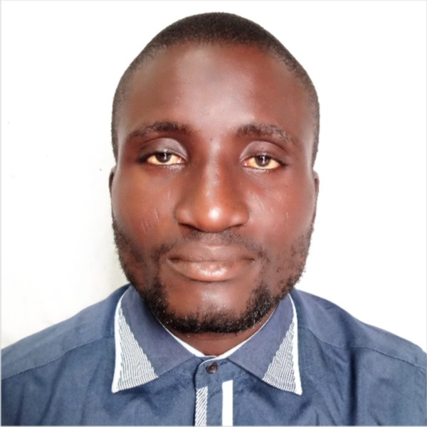

Anofi Sherif Olasunkanmi

Summary
To continue to acquire skills and knowledge in order to offer technological
expertise needed in todays competitive workenvironment through sheer diligent
and dedication at work in order to exploregreater opportunities and higher
responsibilities while consistently adding valueto the organization served.
Areas of expertise
- Basic computer skills
- Data collection and analysis
- Organization
- Fleet Maintenance
- Preventive/corrective maintenance
- Budge
work Experience
GUO transport Company
Badagary Expressway, WEMA bank Bus stop, Alafia, Lagos.
2020-Present
Position:
Fleet Maintenance Officer
responsibilities:
- Daily inspection of fleet of Vehicles.
- Record keeping of faults and problems identified with each vehicle.
- Supervising and coordinating work of technicians at the workshop.
- Track and analyze cost of maintenance and other recurring expenses
pertaining to running of the fleet.
- Send weekly report to the Head of Maintenance on the status of the
fleet and other related issues arising from the fleet monitoring system.
Truckmasters Nigeria Limited
31 Mobalaji Johnson way, Alausa, Ikeja, Lagos
2018-2019
Position:
Fleet maintenance intern
responsibilities:
- Daily inspection of vehicles brought for maintenance or fixing
- Interacting with customers to know the state of their vehicles
- Other routine duties as may be assigned by the training manager
Professional Skills
- Strong interpersonal skills to work effectively in a multicultural
environment with sensitivity and respect for diversity.
- Excellent organization skill; very effective at multi-tasking and
good analytical skills
- Strong computer literacy skills
Educational Background with dates
- 2012-2017 Federal University of Agriculture, Abeokuta (FUNAAB).
- 2004-2010 Government College Lagos, (GCL), Eric-Moore, Lagos.
- 1999-2004 Command Children School, mile 2, Lagos.